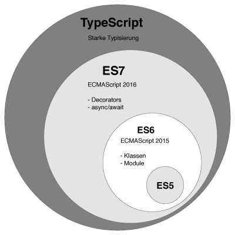

cnpm i typescript -g
tsc helloworld.ts
tsc --init
{
"compilerOptions": {
/* Basic Options */
"target": "es5", /* Specify ECMAScript target version: 'ES3' (default), 'ES5', 'ES2015', 'ES2016', 'ES2017','ES2018' or 'ESNEXT'. 指定ECMAScript的目标版本*/
"module": "commonjs", /* Specify module code generation: 'none', 'commonjs', 'amd', 'system', 'umd', 'es2015', or 'ESNext'. 指定模块代码的生成方式*/
// "lib": [], /* Specify library files to be included in the compilation. 指定编译的时候用来包含的编译文件*/
// "allowJs": true, /* Allow javascript files to be compiled. 允许编译JS文件*/
// "checkJs": true, /* Report errors in .js files. 在JS中包括错误*/
// "jsx": "preserve", /* Specify JSX code generation: 'preserve', 'react-native', or 'react'. 指定JSX代码的生成方式 是保留还是react-native或者react*/
// "declaration": true, /* Generates corresponding '.d.ts' file.生成相应的类型声明文件 */
// "declarationMap": true, /* Generates a sourcemap for each corresponding '.d.ts' file. 为每个类型声明文件生成相应的sourcemap*/
// "sourceMap": true, /* Generates corresponding '.map' file. 生成对应的map文件 */
// "outFile": "./", /* Concatenate and emit output to single file. 合并并且把编译后的内容输出 到一个文件里*/
// "outDir": "./", /* Redirect output structure to the directory.按原始结构输出到目标目录 */
// "rootDir": "./", /* Specify the root directory of input files. Use to control the output directory structure with --outDir. 指定输入文件的根目录，用--outDir来控制输出的目录结构*/
// "composite": true, /* Enable project compilation 启用项目编译*/
// "removeComments": true, /* Do not emit comments to output. 移除注释*/
// "noEmit": true, /* Do not emit outputs. 不要输出*/
// "importHelpers": true, /* Import emit helpers from 'tslib'. */
// "downlevelIteration": true, /* Provide full support for iterables in 'for-of', spread, and destructuring when targeting 'ES5' or 'ES3'. 当目标是ES5或ES3的时候提供对for-of、扩展运算符和解构赋值中对于迭代器的完整支持*/
// "isolatedModules": true, /* Transpile each file as a separate module (similar to 'ts.transpileModule').r把每一个文件转译成一个单独的模块 */
/* Strict Type-Checking Options */
//"strict": true, /* Enable all strict type-checking options. 启用完全的严格类型检查 */
// "noImplicitAny": true, /* Raise error on expressions and declarations with an implied 'any' type. 不能使用隐式的any类型*/
// "strictNullChecks": true, /* Enable strict null checks. 启用严格的NULL检查*/
// "strictFunctionTypes": true, /* Enable strict checking of function types. 启用严格的函数类型检查*/
// "strictBindCallApply": true, /* Enable strict 'bind', 'call', and 'apply' methods on functions.启用函数上严格的bind call 和apply方法 */
// "strictPropertyInitialization": true, /* Enable strict checking of property initialization in classes. 启用类上初始化属性检查*/
// "noImplicitThis": true, /* Raise error on 'this' expressions with an implied 'any' type.在默认的any中调用 this表达式报错 */
// "alwaysStrict": true, /* Parse in strict mode and emit "use strict" for each source file. 在严格模式下解析并且向每个源文件中发射use strict*/
/* Additional Checks */
// "noUnusedLocals": true, /* Report errors on unused locals. 有未使用到的本地变量时报错 */
// "noUnusedParameters": true, /* Report errors on unused parameters. 有未使用到的参数时报错*/
// "noImplicitReturns": true, /* Report error when not all code paths in function return a value. 当不是所有的代码路径都有返回值的时候报错*/
// "noFallthroughCasesInSwitch": true, /* Report errors for fallthrough cases in switch statement. 在switch表达式中没有替代的case会报错 */
/* Module Resolution Options */
// "moduleResolution": "node", /* Specify module resolution strategy: 'node' (Node.js) or 'classic' (TypeScript pre-1.6). 指定模块的解析策略 node classic*/
// "baseUrl": "./", /* Base directory to resolve non-absolute module names. 在解析非绝对路径模块名的时候的基准路径*/
// "paths": {}, /* A series of entries which re-map imports to lookup locations relative to the 'baseUrl'. 一些路径的集合*/
// "rootDirs": [], /* List of root folders whose combined content represents the structure of the project at runtime. 根目录的列表，在运行时用来合并内容*/
// "typeRoots": [], /* List of folders to include type definitions from. 用来包含类型声明的文件夹列表*/
// "types": [], /* Type declaration files to be included in compilation.在编译的时候被包含的类型声明 */
// "allowSyntheticDefaultImports": true, /* Allow default imports from modules with no default export. This does not affect code emit, just typechecking.当没有默认导出的时候允许默认导入，这个在代码执行的时候没有作用，只是在类型检查的时候生效 */
//"esModuleInterop": true /* Enables emit interoperability between CommonJS and ES Modules via creation of namespace objects for all imports. Implies 'allowSyntheticDefaultImports'.*/
// "preserveSymlinks": true, /* Do not resolve the real path of symlinks.不要symlinks解析的真正路径 */
/* Source Map Options */
// "sourceRoot": "", /* Specify the location where debugger should locate TypeScript files instead of source locations. 指定ts文件位置*/
// "mapRoot": "", /* Specify the location where debugger should locate map files instead of generated locations. 指定 map文件存放的位置 */
// "inlineSourceMap": true, /* Emit a single file with source maps instead of having a separate file. 源文件和sourcemap 文件在同一文件中，而不是把map文件放在一个单独的文件里*/
// "inlineSources": true, /* Emit the source alongside the sourcemaps within a single file; requires '--inlineSourceMap' or '--sourceMap' to be set. 源文件和sourcemap 文件在同一文件中*/
/* Experimental Options */
// "experimentalDecorators": true, /* Enables experimental support for ES7 decorators. 启动装饰器*/
// "emitDecoratorMetadata": true, /* Enables experimental support for emitting type metadata for decorators. */
}
}
tsc
let married: boolean=false;
let age: number=10;
let firstname: string='zfpx';
let arr2: number[]=[4,5,6];
let arr3: Array<number>=[7,8,9];
数量和类型的数组let zhufeng:[string,number] = ['zhufeng',5];
zhufeng[0].length;
zhufeng[1].toFixed(2);
| 元组 | 数组 |
|---|---|
| 每一项可以是不同的类型 | 每一项都是同一种类型 |
| 有预定义的长度 | 没有长度限制 |
| 用于表示一个结构 | 用于表示一个列表 |
const animal:[string,number,boolean] = ['zhufeng',10,true];
enum Gender{
GIRL,
BOY
}
console.log(`李雷是${Gender.BOY}`);
console.log(`韩梅梅是${Gender.GIRL}`);
enum Week{
MONDAY=1,
TUESDAY=2
}
console.log(`今天是星期${Week.MONDAY}`);
const enum Colors {
Red,
Yellow,
Blue
}
let myColors = [Colors.Red, Colors.Yellow, Colors.Blue];
const enum Color {Red, Yellow, Blue = "blue".length};
any就是可以赋值给任意类型anylet root:any=document.getElementById('root');
root.style.color='red';
let x: number;
x = 1;
x = undefined;
x = null;
let y: number | null | undefined;
y = 1;
y = undefined;
y = null;
function greeting(name:string):void {
console.log('hello',name);
}
greeting('zfpx');
never是其它类型(null undefined)的子类型，代表不会出现的值
// 返回never的函数 必须存在 无法达到（ unreachable ） 的终点
function error(message: string): never {
throw new Error(message);
}
// 由类型推论得到返回值为 never
function fail() {
return error("Something failed");
}
// 返回never的函数 必须存在 无法达到（ unreachable ） 的终点
function infiniteLoop(): never {
while (true) {}
}
// Compiled with --strictNullChecks
function fn(x: number | string) {
if (typeof x === 'number') {
// x: number 类型
} else if (typeof x === 'string') {
// x: string 类型
} else {
// x: never 类型
// --strictNullChecks 模式下，这里的代码将不会被执行，x 无法被观察
}
}
let username2;
username2 = 10;
username2 = 'zhufeng';
username2 = null;
let name = 'zhufeng';
console.log(name.toUpperCase());
console.log((new String('zhufeng')).toUpperCase());
let isOK: boolean = true; // 编译通过
let isOK: boolean = Boolean(1) // 编译通过
let isOK: boolean = new Boolean(1); // 编译失败 期望的 isOK 是一个原始数据类型
let name4: string | number;
name4 = 3;
name4 = 'zhufeng';
console.log(name4.toUpperCase());
let name5: string | number;
(name5 as number).toFixed(3);
(name5 as string).length;
(name5 as boolean);
type Lucky = 1 | 'One'|true;
let foo:Lucky = 'One';
几个字符串中的一个, 联合类型（Union Types）表示取值可以为多种类型中的一种function hello(name:string):void {
console.log('hello',name);
}
hello('zfpx');
type GetUsernameFunction = (x:string,y:string)=>string;
let getUsername:GetUsernameFunction = function(firstName,lastName){
return firstName + lastName;
}
let hello2 = function (name:string):void {
console.log('hello2',name);
}
hello('zfpx');
hello2('zfpx');
在TS中函数的形参和实参必须一样，不一样就要配置可选参数,而且必须是最后一个参数
function print(name:string,age?:number):void {
console.log(name,age);
}
print('zfpx');
function ajax(url:string,method:string='GET') {
console.log(url,method);
}
ajax('/users');
function sum(...numbers:number[]) {
return numbers.reduce((val,item)=>val+=item,0);
}
console.log(sum(1,2,3));
let obj: any={};
function attr(val: string): void;
function attr(val: number): void;
function attr(val:any):void {
if (typeof val === 'number') {
obj.age=val;
} else {
obj.name=val;
}
}
attr('zfpx');
attr(9);
attr(true);
console.log(obj);
class Person{
name:string;
getName():void{
console.log(this.name);
}
}
let p1 = new Person();
p1.name = 'zhufeng';
p1.getName();
class User {
myname:string;
constructor(myname: string) {
this.myname = myname;
}
get name() {
return this.myname;
}
set name(value) {
this.myname = value;
}
}
let user = new User('zhufeng');
user.name = 'jiagou';
console.log(user.name);
class User {
constructor(public myname: string) {}
get name() {
return this.myname;
}
set name(value) {
this.myname = value;
}
}
let user = new User('zhufeng');
console.log(user.name);
user.name = 'jiagou';
console.log(user.name);
构造函数中初始化常量标志符，其值不能被重新分配编译阶段进行代码检查。而 const 则会在运行时检查（在支持 const 语法的 JavaScript 运行时环境中）class Animal {
public readonly name: string
constructor(name) {
this.name = name;
}
changeName(name:string){
this.name = name;
}
}
let a = new Animal('zhufeng');
a.changeName('jiagou');
class Person {
name: string;//定义实例的属性，默认省略public修饰符
age: number;
constructor(name:string,age:number) {//构造函数
this.name=name;
this.age=age;
}
getName():string {
return this.name;
}
setName(name:string): void{
this.name=name;
}
}
class Student extends Person{
no: number;
constructor(name:string,age:number,no:number) {
super(name,age);
this.no=no;
}
getNo():number {
return this.no;
}
}
let s1=new Student('zfpx',10,1);
console.log(s1);
class Father {
public name: string; //类里面 子类 其它任何地方外边都可以访问
protected age: number; //类里面 子类 都可以访问,其它任何地方不能访问
private money: number; //类里面可以访问， 子类和其它任何地方都不可以访问
constructor(name:string,age:number,money:number) {//构造函数
this.name=name;
this.age=age;
this.money=money;
}
getName():string {
return this.name;
}
setName(name:string): void{
this.name=name;
}
}
class Child extends Father{
constructor(name:string,age:number,money:number) {
super(name,age,money);
}
desc() {
console.log(`${this.name} ${this.age} ${this.money}`);
}
}
let child = new Child('zfpx',10,1000);
console.log(child.name);
console.log(child.age);
console.log(child.money);
class Father {
static className='Father';
static getClassName() {
return Father.className;
}
public name: string;
constructor(name:string) {//构造函数
this.name=name;
}
}
console.log(Father.className);
console.log(Father.getClassName());
abstract class Animal3 {
name:string;
abstract speak();
}
class Cat extends Animal3{
speak(){
console.log('喵喵喵');
}
}
let cat = new Cat();
cat.speak();
| 访问控制修饰符 | private protected public |
|---|---|
| 只读属性 | readonly |
| 静态属性 | static |
| 抽象类、抽象方法 | abstract |
abstract class Animal5{
name:string;
constructor(name:string){
this.name = name;
}
abstract speak();
}
interface Flying{
fly()
}
class Duck extends Animal5 implements Flying{
speak(){
console.log('汪汪汪');
}
fly(){
console.log('我会飞');
}
}
let duck = new Duck('zhufeng');
duck.speak();
duck.fly();
abstract class Animal{
abstract speak():void;
}
class Dog extends Animal{
speak(){
console.log('小狗汪汪汪');
}
}
class Cat extends Animal{
speak(){
console.log('小猫喵喵喵');
}
}
let dog=new Dog();
let cat=new Cat();
dog.speak();
cat.speak();
class Cat6 extends Animal6{
speak(word:string):string{
return 'Cat:'+word;
}
}
let cat6 = new Cat6();
console.log(cat6.speak('hello'));
function double(val:number):number
function double(val:string):string
function double(val:any):any{
if(typeof val == 'number'){
return val *2;
}
return val + val;
}
let r = double(1);
console.log(r);
class Animal7{
speak(word:string):string{
return 'Animal: '+word;
}
}
class Cat7 extends Animal7{
speak(word:string):string{
return 'Cat:'+word;
}
}
class Dog7 extends Animal7{
speak(word:string):string{
return 'Dog:'+word;
}
}
let cat7 = new Cat7();
console.log(cat7.speak('hello'));
let dog7 = new Dog7();
console.log(dog7.speak('hello'));
行为的抽象，另外可以用来描述对象的形状//接口可以用来描述`对象的形状`,少属性或者多属性都会报错
interface Speakable{
speak():void;
name?:string;//？表示可选属性
}
let speakman:Speakable = {
name:string;//多属性也会报错
speak(){}//少属性会报错
}
//接口可以在面向对象编程中表示为行为的抽象
interface Speakable{
speak():void;
}
interface Eatable{
eat():void
}
class Person5 implements Speakable,Eatable{
speak(){
console.log('Person5说话');
}
eat(){}
}
class TangDuck implements Speakable{
speak(){
console.log('TangDuck说话');
}
eat(){}
}
//无法预先知道有哪些新的属性的时候,可以使用 `[propName:string]:any`,propName名字是任意的
interface Person {
readonly id: number;
name: string;
[propName: string]: any;
}
let p1 = {
id:1,
name:'zhufeng',
age:10
}
interface Speakable{
speak():void
}
interface SpeakChinese extends Speakable{
speakChinese():void
}
class Person5 implements SpeakChinese{
speak(){
console.log('Person5')
}
speakChinese(){
console.log('speakChinese')
}
}
interface Person{
readonly id:number;
name:string
}
let tom:Person = {
id :1,
name:'zhufeng'
}
tom.id = 1;
interface discount{
(price:number):number
}
let cost:discount = function(price:number):number{
return price * .8;
}
interface UserInterface {
[index:number]:string
}
let arr:UserInterface = ['zfpx1','zfpx2'];
console.log(arr);
interface UserInterface2 {
[index:string]:string
}
let obj:UserInterface2 = {name:'zhufeng'};
interface Speakable{
name:string;
speak(words:string):void
}
class Dog implements Speakable{
name:string;
speak(words){
console.log(words);
}
}
let dog=new Dog();
dog.speak('汪汪汪');
class Animal{
constructor(public name:string){
}
}
interface WithNameClass{
new(name:string):Animal
}
function createAnimal(clazz:WithNameClass,name:string){
return new clazz(name);
}
let a = createAnimal(Animal,'zhufeng');
console.log(a.name);
T作用域只限于函数内部使用function createArray(length: number, value: any): Array<any> {
let result: any = [];
for (let i = 0; i < length; i++) {
result[i] = value;
}
return result;
}
let result = createArray(3,'x');
console.log(result);
function createArray(length: number, value: any): Array<any> {
let result: any = [];
for (let i = 0; i < length; i++) {
result[i] = value;
}
return result;
}
let result = createArray(3,'x');
console.log(result);
function createArray2<T>(length: number, value: T): Array<T> {
let result: T[] = [];
for (let i = 0; i < length; i++) {
result[i] = value;
}
return result;
}
let result2 = createArray2<string>(3,'x');
console.log(result);
argumentsfunction sum(...parameters:number[]){
let args:IArguments = arguments;
for(let i=0;i<args.length;i++){
console.log(args[i]);
}
}
sum(1,2,3);
let root = document.getElementById('root');
let children:HTMLCollection = root.children;
children.length;
let nodeList:NodeList = root.childNodes;
nodeList.length;
class MyArray<T>{
private list:T[]=[];
add(value:T) {
this.list.push(value);
}
getMax():T {
let result=this.list[0];
for (let i=0;i<this.list.length;i++){
if (this.list[i]>result) {
result=this.list[i];
}
}
return result;
}
}
let arr=new MyArray();
arr.add(1); arr.add(2); arr.add(3);
let ret = arr.getMax();
console.log(ret);
interface Calculate{
<T>(a:T,b:T):T
}
let add:Calculate = function<T>(a:T,b:T){
return a;
}
add<number>(1,2);
function swap<A,B>(tuple:[A,B]):[B,A]{
return [tuple[1],tuple[0]];
}
let swapped = swap<string,number>(['a',1]);
console.log(swapped);
console.log(swapped[0].toFixed(2));
console.log(swapped[1].length);
function createArray3<T=number>(length: number, value: T): Array<T> {
let result: T[] = [];
for (let i = 0; i < length; i++) {
result[i] = value;
}
return result;
}
let result2 = createArray3(3,'x');
console.log(result2);
function logger<T>(val:T){
console.log(val.length)
}
interface LengthWise{
length:number
}
//可以让泛型继承一个接口
function logger2<T extends LengthWise>(val:T){
console.log(val.length)
}
logger2(1);
logger2('zhufeng');
interface Cart<T>{
list:T[]
}
let cart:Cart<{name:string,price:number}> = {
list:[{name:'zhufeng',price:10}]
}
console.log(cart.list[0].name,cart.list[0].price);
type Cart<T> = {list:T[]} | T[];
let c1:Cart<string> = {list:['1']};
let c2:Cart<number> = [1];
Duck-Check,就是说只要目标类型中声明的属性变量在源类型中都存在就是兼容的interface Animal{
name:string;
age:number;
gender:number
}
let a1 = {
name:'zhufeng',
age:10,
gender:0
}
interface Person{
name:string;
age:number
}
////- 要判断目标类型`Person`是否能够兼容输入的源类型`Animal`
function getName(p:Person):string{
return p.name;
}
getName(a1);
//只有在传参的时候两个变量之间才会进行兼容性的比较，赋值的时候并不会比较,会直接报错
let x:Person = {
name:'zhufeng',
age:10,
gender:0
}
//基本数据类型也有兼容性判断
let num : string|number;
let str:string;
num = str;
//只要有toString()方法
let num2 : {
toString():string
}
let str2:string;
num2 = str2;
class Animal{
name:string
}
class Bird extends Animal{
swing:number
}
let a:Animal;
a = new Bird();
let b:Bird;
//并不是父类兼容子类，子类不兼容父类
b = new Animal();
class Animal{
name:string
}
//如果父类和子类结构一样，也可以的
class Bird extends Animal{}
let a:Animal;
a = new Bird();
let b:Bird;
b = new Animal();
//甚至没有关系的两个类的实例也是可以的
class Animal{
name:string
}
class Bird{
name:string
}
let a:Animal ;
a = new Bird();
let b:Bird;
b = new Animal();
type sumFunc = (a:number,b:number)=>number;
let sum:sumFunc;
function f1(a:number,b:number){
return a+b;
}
sum = f1;
//可以省略一个参数
function f2(a:number):number{
return a;
}
sum = f2;
//可以省略二个参数
function f3():number{
return 0;
}
sum = f3;
//多一个参数可不行
function f4(a:number,b:number,c:number){
return a+b+c;
}
sum = f4;
type GetPerson = ()=>{name:string,age:number};
let getPerson:GetPerson;
//参数一样可以
function g1(){
return {name:'zhufeng',age:10};
}
getPerson = g1;
//多一个属性也可以
function g2(){
return {name:'zhufeng',age:10,gender:'male'};
}
getPerson = g2;
//少一个属性不行
function g3(){
return {name:'zhufeng'};
}
getPerson = g3;
//因为有可能要调用返回值上的方法
getPerson().age.toFixed();
type LogFunc = (a:number|string)=>void;
let log:LogFunc;
function log1(a:number){
console.log(a);
}
//在这里定义的参数类型兼容实际的参数类型
log = log1;
function log2(a:number|string|boolean){
console.log(a);
}
//在这里实际的参数类型兼容定义的参数类型
log = log2;
//接口内容为空没用到泛型的时候是可以的
interface Empty<T>{}
let x:Empty<string>;
let y:Empty<number>;
x = y;
//接口内容不为空的时候不可以
interface NotEmpty<T>{
data:T
}
let x1:NotEmpty<string>;
let y1:NotEmpty<number>;
x1 = y1;
interface NotEmptyString{
data:string
}
interface NotEmptyNumber{
data:number
}
let xx3:NotEmptyString;
let yy3:NotEmptyNumber;
xx3 = yy3;
//数字可以赋给枚举
enum Colors {Red,Yellow}
let c:Colors;
c = Colors.Red;
c = 1;
c = '1';
//枚举值可以赋给数字
let n:number;
n = 1;
n = Colors.Red;
function double(input:string|number|boolean){
if(typeof input === 'string'){
return input + input;
}else {
if(typeof input === 'number'){
return input*2;
}else{
return !input;
}
}
}
class Animal{
name:string;
}
class Bird extends Animal{
swing:number
}
function getName(animal:Animal){
if(animal instanceof Bird){
console.log(animal.swing);
}else{
console.log(animal.name);
}
}
strictNullChecks选项，那么对于可能为null的变量不能调用它上面的方法和属性function getFirstLetter(s:string|null){
//第一种方式是加上null判断
if(s == null){
return '';
}
//第二种处理是增加一个或的处理
s = s || '';
return s.charAt(0);
}
//它并不能处理一些复杂的判断，需要加链判断运算符
function getFirstLetter2(s:string|null){
function log(){
console.log(s!.trim());
}
s = s || '';
log();
return s.charAt(0);
}
a?.b; //如果a是null/undefined,那么返回undefined，否则返回a.b的值.
a == null ? undefined : a.b;
a?.[x]; //如果a是null/undefined,那么返回undefined，否则返回a[x]的值
a == null ? undefined : a[x];
a?.b(); // 如果a是null/undefined,那么返回undefined
a == null ? undefined : a.b(); //如果a.b不函数的话抛类型错误异常,否则计算a.b()的结果
a?.(); //如果a是null/undefined,那么返回undefined
a == null ? undefined : a(); //如果A不是函数会抛出类型错误
//否则 调用a这个函数
interface WarningButton{
class:'warning',
text1:'修改'
}
interface DangerButton{
class:'danger',
text2:'删除'
}
type Button = WarningButton|DangerButton;
function getButton(button:Button){
if(button.class=='warning'){
console.log(button.text1);
}
if(button.class=='danger'){
console.log(button.text2);
}
}
interface Bird {
swing: number;
}
interface Dog {
leg: number;
}
function getNumber(x: Bird | Dog) {
if ("swing" in x) {
return x.swing;
}
return x.leg;
}
parameterName is Type 这种形式，其中 parameterName 必须是当前函数签名里的一个参数名`interface Bird {
swing: number;
}
interface Dog {
leg: number;
}
//没有相同字段可以定义一个类型保护函数
function isBird(x:Bird|Dog): x is Bird{
return (<Bird>x).swing == 2;
return (x as Bird).swing == 2;
}
function getAnimal(x: Bird | Dog) {
if (isBird(x)) {
return x.swing;
}
return x.leg;
}
interface Bird{
name:string,
fly():void
}
interface Person{
name:string,
talk():void
}
type BirdPerson = Bird & Person;
let p:BirdPerson={name:'zhufeng',fly(){},talk(){}};
p.fly;
p.name
p.talk;
//先定义类型，再定义变量
type People = {
name:string,
age:number,
gender:string
}
let p1:People = {
name:'zhufeng',
age:10,
gender:'male'
}
//先定义变量，再定义类型
let p1 = {
name:'zhufeng',
age:10,
gender:'male'
}
type People = typeof p1;
function getName(p:People):string{
return p.name;
}
interface Person{
name:string;
age:number;
job:{
name:string
};
interests:{name:string,level:number}[]
}
let FrontEndJob:Person['job'] = {
name:'前端工程师'
}
let interestLevel:Person['interests'][0]['level'] = 2;
interface Person{
name:string;
age:number;
gender:'male'|'female';
}
//type PersonKey = 'name'|'age'|'gender';
type PersonKey = keyof Person;
function getValueByKey(p:Person,key:PersonKey){
return p[key];
}
let val = getValueByKey({name:'zhufeng',age:10,gender:'male'},'name');
console.log(val);
interface Person{
name:string;
age:number;
gender:'male'|'female';
}
//批量把一个接口中的属性都变成可选的
type PartPerson = {
[Key in keyof Person]?:Person[Key]
}
let p1:PartPerson={};
//也可以使用泛型
type Part<T> = {
[key in keyof T]?:T[key]
}
let p2:Part<Person>={};
type Partial<T> = { [P in keyof T]?: T[P] };
interface A {
a1: string;
a2: number;
a3: boolean;
}
type aPartial = Partial<A>;
const a: aPartial = {}; // 不会报错
/**
* Make all properties in T required
*/
type Required<T> = { [P in keyof T]-?: T[P] };
interface Person{
name:string;
age:number;
gender?:'male'|'female';
}
let p:Required<Person> = {
name:'zhufeng',
age:10,
//gender:'male'
}
/**
* Make all properties in T readonly
*/
type Readonly<T> = { readonly [P in keyof T]: T[P] };
interface Person{
name:string;
age:number;
gender?:'male'|'female';
}
let p:Readonly<Person> = {
name:'zhufeng',
age:10,
gender:'male'
}
p.age = 11;
/**
* From T pick a set of properties K
*/
type Pick<T, K extends keyof T> = { [P in K]: T[P] };
interface Animal {
name: string;
age: number;
}
// 摘取 Animal 中的 name 属性
type AnimalSub = Pick<Animal, "name">; // { name: string; }
readonly 或 ? 修饰符在一个映射类型里可以用前缀 + 或-来表示这个修饰符应该被添加或移除interface Fish{
name:string
}
interface Water{
name:string
}
interface Bird{
name:string
}
interface Sky{
name:string
}
//三元运算符
type Condition<T> = T extends Fish?Water:Sky;
let con:Condition<Fish> = {name:'水'};
interface Fish{
name:string
}
interface Water{
name1:string
}
interface Bird{
name:string
}
interface Sky{
name2:string
}
//三元运算符
type Condition<T> = T extends Fish?Water:Sky;
let con1:Condition<Fish|Water> = {name1:'水'};
let con2:Condition<Fish|Water> = {name2:'水'};
Exclude<T, U> // 从 T 可分配给的类型中排除 U。
Extract<T, U> // 从 T 可分配的类型中提取 U。
NonNullable<T> // 从 T 中排除 null 和 undefined。
ReturnType<T> // 获取函数类型的返回类型。
InstanceType<T> // 获取构造函数类型的实例类型。
type E = Exclude<string|number,string>;
let e:E = 10;
type E = Extract<string|number,string>;
let e:E = '1';
type E = NonNullable<string|number|null|undefined>;
let e:E = null;
function getUserInfo() {
return { name: "zhufeng", age: 10 };
}
// 通过 ReturnType 将 getUserInfo 的返回值类型赋给了 UserInfo
type UserInfo = ReturnType<typeof getUserInfo>;
const userA: UserInfo = {
name: "zhufeng",
age: 10
};
class Person{
name:string;
constructor(name){
this.name = name;
}
getName(){console.log(this.name)}
}
type P = InstanceType<typeof Person>;
let p:P = {name:'zhufeng',getName(){}};